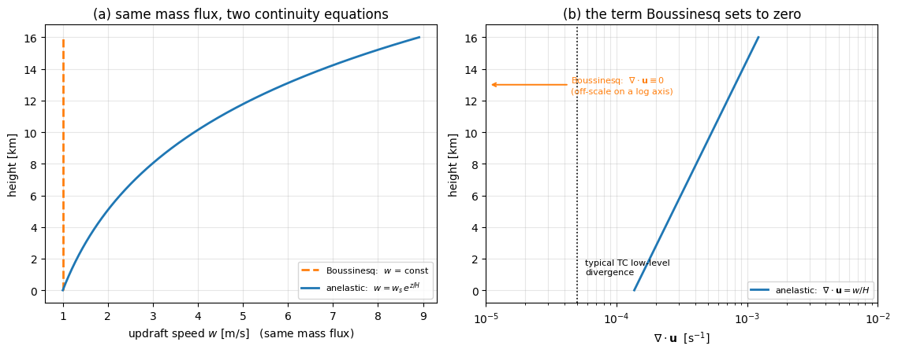

Anelastic Approximation#
放行密度隨「高度」變化，但絕不放行密度隨「時間」變化 —— 深對流進得來，聲波照樣被關在門外。
滯彈近似是深對流、颱風與雲解析模式的標準配備。它比 Boussinesq 近似 只多鬆綁了一件事，但那一件事讓適用範圍從「\(1\ \text{km}\) 以下」一路撐到「整層對流層」。
這篇筆記要講清楚：它鬆綁了什麼、為什麼鬆綁之後聲波還是進不來、以及這個鬆綁換來了什麼新的物理。
一、Boussinesq 在颱風上撞牆#
Boussinesq 近似 把密度整個換成一個常數 \(\rho_0\)，只在浮力項留下擾動 \(\rho'\)。它乾淨、好用，但有一條硬性的適用條件：
系統的厚度要遠小於密度標高。那颱風長什麼樣子？從海面一路長到 \(15\ \text{km}\) 高的對流層頂。這時候背景密度是
頂層的空氣只剩地面的 \(13\%\)。 這時候還堅持「密度到處都是 \(1.2\ \text{kg}\cdot\text{m}^{-3}\)」，那就不是近似而是錯誤了 —— Boussinesq 那篇的數值驗證算出這個誤差高達 \(146\%\)。
怎麼辦呢？ 直覺的第一個念頭是「那就把完整的 \(\rho\left(x,y,z,t\right)\) 放回去」。但這樣前功盡棄 —— 聲波會跟著一起回來，\(\Delta t\) 又被綁死在 \(340\ \text{m}\cdot\text{s}^{-1}\) 上。
我們要的是一個只鬆綁必要的那一點點的做法。
二、只放寬一件事：\(\rho_0 \to \bar{\rho}(z)\)#
先問一個關鍵問題：上面那 \(87\%\) 的密度差異，到底是誰造成的？
不是溫度擾動、不是對流、也不是颱風 —— 是重力。是背景大氣的靜力平衡把底層的空氣壓實了。這個結構跟天氣完全無關：颱風來之前它就在那裡，颱風走了以後它還在那裡。
既然如此，就把它當成已知的背景，而不是要預報的未知數：
\(\bar{\rho}(z)\)：只隨高度變化的背景密度，由靜力平衡決定，與 \(t\) 和水平位置無關 —— 像是畫布的底色。
\(\rho'\)：冷暖造成的微小擾動，跟 Boussinesq 一樣，只在浮力項出場。
連續方程式於是變成
跟 Boussinesq 的 \(\nabla\cdot\mathbf{u} = 0\) 相比，差別只在於 \(\bar{\rho}\) 被關在散度符號裡面。因為它是 \(z\) 的函數，碰到 \(\partial/\partial z\) 就提不出來：
看到 \(\rho\) 被關在偏微分符號裡面、提不出來也消不掉，那就是滯彈近似的指紋。
為什麼 \(\bar{\rho}\) 只能是 \(z\) 的函數#
這一點不能妥協。如果貪心地想用當地的真實密度 \(\rho\left(x,y,z,t\right)\)，那 \(\partial\rho/\partial t\) 就活過來了，聲波跟著回來，整個近似的目的就消失了。
\(\bar{\rho}\) 只依賴 \(z\)，正是「\(\partial\bar{\rho}/\partial t \equiv 0\)」在數學上嚴格成立的理由 —— 不是靠尺度分析硬壓成零，是真的等於零。這一點在 軸對稱連續方程式 那篇的【假設 2】可以清楚對照：該檔是用尺度分析（\(3\times10^{-7}\) vs \(5\times10^{-5}\)）把 \(\partial\rho/\partial t\) 壓掉的，而換成 \(\bar{\rho}(z)\) 之後，這一步就不再需要任何近似了。
三、名字的由來：an-elastic = 沒有彈性#
這個名字取得非常誠實，值得拆開來看。
elastic（彈性） 指的是空氣像彈簧一樣：被壓縮 → 產生回復力 → 彈回來 → 彈過頭 → 再被壓縮。這個一壓一彈的振盪，就是聲波。
an-elastic（滯彈／無彈性） 就是把這根彈簧直接拔掉。空氣還是可以被推、被擠、被抬升，但它不會「彈」。
數學上這件事發生在哪裡？就在上一節那個被劃掉的 \(\partial\bar{\rho}/\partial t\)。密度的時間變化率被移除，密度就沒辦法振盪，聲波這個模態在方程式裡不存在，而不是「存在但很小」。
所以在濾波這件事情上，滯彈近似跟 Boussinesq 是完全一樣的：
聲波 |
重力波 |
深層密度分層 |
|
|---|---|---|---|
完整可壓縮方程組 |
保留 |
保留 |
保留 |
Boussinesq |
濾掉 |
保留 |
丟掉 |
Anelastic |
濾掉 |
保留 |
保留 |
一言以蔽之：滯彈近似 \(=\) Boussinesq 的濾波能力 \(+\) 深層大氣的密度結構。名字聽起來很玄，其實就是「密度可以隨高度變，但不准隨時間變」而已。
代價也跟 Boussinesq 一模一樣：氣壓從預報變數變成診斷變數，每個時間步都要解一次橢圓方程式才拿得到，只是這次的橢圓算子帶了 \(\bar{\rho}(z)\) 的權重。
四、最直接的後果：上升氣流被迫隨高度加速#
這是鬆綁成 \(\bar{\rho}(z)\) 之後，最能直接感覺到的物理差別。
把 \(\nabla\cdot\left(\bar{\rho}\mathbf{u}\right) = 0\) 展開，再除以 \(\bar{\rho}\)：
在滯彈系統裡，速度場的散度不是零。 一團上升的空氣會持續膨脹，因為它周圍的環境壓力一直在下降。
反過來用質量守恆看更直觀：一根穩定的上升氣流管，每個高度的質量通量 \(\bar{\rho}w\) 都必須相同。既然 \(\bar{\rho}\) 一路遞減，\(w\) 就只能一路遞增：
這就是為什麼深對流的上升氣流在高層總是特別強、颱風的高層外流總是特別旺 —— 其中有一部分根本不是動力學驅動的，純粹是「空氣變稀薄了，同樣多的質量只好跑得更快」。
Boussinesq 因為 \(\nabla\cdot\mathbf{u} = 0\)，完全看不到這個效應。下一節把它算成數字。
五、數值驗證#
我們問兩個很具體的問題：
同樣一股質量通量的上升氣流，Boussinesq 與滯彈近似算出來的 \(w\) 差幾倍？
Boussinesq 硬說等於零的那個 \(\nabla\cdot\mathbf{u} = w/H_\rho\)，量級到底有多大？值得在意嗎？
第二個問題需要一把尺才有意義，所以我們拿 軸對稱連續方程式 裡颱風底層徑向輻散的典型量級（\(\sim 5\times10^{-5}\ \text{s}^{-1}\)）當作比較基準。
背景一樣取等溫大氣 \(\bar{\rho}(z) = \rho_s e^{-z/H_\rho}\)，地面上升速度取 \(w_s = 1\ \text{m}\cdot\text{s}^{-1}\)（所有數字都跟著它等比例縮放）。資料每次執行時即時生成，沒有任何檔案被存下來。
import numpy as np
import matplotlib.pyplot as plt
G, RD, T0 = 9.81, 287.0, 250.0 # 重力加速度 [m/s^2]、乾空氣氣體常數 [J/kg/K]、等溫背景溫度 [K]
H = RD * T0 / G # 密度標高 H = R_d T / g [m]
W_S = 1.0 # 地面附近的上升速度 [m/s]
TC_DIV = 5.0e-5 # 颱風底層徑向輻合的典型量級 [1/s]
def w_anelastic(z):
"""固定質量通量 rho_bar * w = const 之下，垂直速度隨高度的解。"""
return W_S * np.exp(z / H) # rho_bar ~ exp(-z/H) -> w ~ exp(+z/H)
def div_u(z):
"""滯彈系統中速度場本身的散度：div(u) = -w dln(rho_bar)/dz = w / H。"""
return w_anelastic(z) / H
# ===== 主程式執行區 =====
print("密度標高 H = R_d T / g = %.0f m" % H)
print("地面上升速度 w_s = %.1f m/s（以下數字都跟著它等比例縮放）" % W_S)
print()
print(" 高度 rho_bar/rho_s w (anelastic) w 放大倍率 div(u) = w/H")
for zk in [0.0, 3.0, 6.0, 9.0, 12.0, 15.0]:
zz = zk * 1000.0
print(" %4.1f km %5.3f %5.2f m/s %5.2f x %8.2e 1/s"
% (zk, np.exp(-zz / H), w_anelastic(zz), w_anelastic(zz) / W_S, div_u(zz)))
print()
print("颱風底層徑向輻散的典型量級 : %8.2e 1/s" % TC_DIV)
print("12 km 處 Boussinesq 硬說等於零的 div(u) : %8.2e 1/s (%.0f 倍)"
% (div_u(12000.0), div_u(12000.0) / TC_DIV))
z = np.linspace(0, 16000, 400)
fig, ax = plt.subplots(1, 2, figsize=(11.5, 4.6))
ax[0].plot(np.full_like(z, W_S), z / 1000.0, lw=2, ls="--", color="C1",
label=r"Boussinesq: $w$ = const")
ax[0].plot(w_anelastic(z), z / 1000.0, lw=2, color="C0",
label=r"anelastic: $w = w_s\,e^{z/H}$")
ax[0].set_xlabel("updraft speed $w$ [m/s] (same mass flux)")
ax[0].set_ylabel("height [km]")
ax[0].set_title("(a) same mass flux, two continuity equations")
ax[0].legend(fontsize=8); ax[0].grid(alpha=.3)
ax[1].plot(div_u(z), z / 1000.0, lw=2, color="C0", label=r"anelastic: $\nabla\cdot\mathbf{u} = w/H$")
ax[1].axvline(TC_DIV, lw=1.2, ls=":", color="k")
ax[1].text(TC_DIV * 1.15, 1.0, "typical TC low-level\ndivergence", fontsize=8)
ax[1].set_xscale("log")
ax[1].set_xlim(1e-5, 1e-2)
# Boussinesq 的 div(u) 嚴格為零，對數軸上畫不出來 —— 用箭頭標在左邊界外
ax[1].annotate(r"Boussinesq: $\nabla\cdot\mathbf{u} \equiv 0$" + "\n(off-scale on a log axis)",
xy=(1.05e-5, 13.0), xytext=(4.5e-5, 13.0), fontsize=8, color="C1", va="center",
arrowprops=dict(arrowstyle="->", color="C1", lw=1.4))
ax[1].set_xlabel(r"$\nabla\cdot\mathbf{u}$ [s$^{-1}$]")
ax[1].set_ylabel("height [km]")
ax[1].set_title("(b) the term Boussinesq sets to zero")
ax[1].legend(fontsize=8, loc="lower right"); ax[1].grid(alpha=.3, which="both")
plt.tight_layout()
plt.show()
密度標高 H = R_d T / g = 7314 m
地面上升速度 w_s = 1.0 m/s（以下數字都跟著它等比例縮放）
高度 rho_bar/rho_s w (anelastic) w 放大倍率 div(u) = w/H
0.0 km 1.000 1.00 m/s 1.00 x 1.37e-04 1/s
3.0 km 0.664 1.51 m/s 1.51 x 2.06e-04 1/s
6.0 km 0.440 2.27 m/s 2.27 x 3.11e-04 1/s
9.0 km 0.292 3.42 m/s 3.42 x 4.68e-04 1/s
12.0 km 0.194 5.16 m/s 5.16 x 7.05e-04 1/s
15.0 km 0.129 7.77 m/s 7.77 x 1.06e-03 1/s
颱風底層徑向輻散的典型量級 : 5.00e-05 1/s
12 km 處 Boussinesq 硬說等於零的 div(u) : 7.05e-04 1/s (14 倍)

兩件事被量出來了：
① 上升氣流的放大倍率（圖 a）。同一股質量通量，滯彈近似算出來的 \(w\) 在 \(12\ \text{km}\) 是地面的 \(\mathbf{5.2}\) 倍、在 \(15\ \text{km}\) 是 \(\mathbf{7.8}\) 倍。Boussinesq 則從頭到尾都是那條垂直的虛線。如果你用 Boussinesq 去診斷颱風的高層外流，會系統性地低估好幾倍。
② 被丟掉的那一項有多大（圖 b）。\(\nabla\cdot\mathbf{u} = w/H_\rho\) 在 \(12\ \text{km}\) 處是 \(7.1\times10^{-4}\ \text{s}^{-1}\)，而颱風底層徑向輻散的典型量級是 \(5\times10^{-5}\ \text{s}^{-1}\) —— 前者比後者大了 \(14\) 倍。
第二點值得停下來想一下。Boussinesq 說 \(\nabla\cdot\mathbf{u} = 0\)，意思是宣稱那個 \(7.1\times10^{-4}\) 可以當成零。但它比我們真正想研究的訊號本身還大一個量級。
在深對流裡用 Boussinesq，丟掉的不是一個小的修正項 —— 丟掉的東西比主角還大。
六、三個容易犯的錯#
① 以為 anelastic 是「可壓縮」的版本#
名字裡有 elastic，很容易讓人覺得它把壓縮性處理回來了。它沒有。 聲波一樣被濾掉、氣壓一樣是診斷變數、一樣要解橢圓方程式。
它處理的是背景密度分層，不是壓縮性。真正保留壓縮性的是完整可壓縮方程組（WRF、CM1 那類 split-explicit 模式）。
② 把 \(\nabla\cdot\left(\bar{\rho}\mathbf{u}\right) = 0\) 讀成 \(\nabla\cdot\mathbf{u} = 0\)#
這是最實務、也最容易在寫程式的時候犯的錯。第四、五節已經算過了：\(\nabla\cdot\mathbf{u} = w/H_\rho \neq 0\)，而且量級不小。
如果在滯彈模式裡誤用了 Boussinesq 的 Poisson 解算器（內建假設 \(\nabla\cdot\mathbf{u} = 0\)），質量就不守恆，而且誤差會隨高度指數放大 —— 症狀通常是模式頂部莫名其妙地累積質量或發散。
③ 把 \(\bar{\rho}\) 換成當地密度#
\(\bar{\rho}\) 必須是一個預先給定、只跟 \(z\) 有關的剖面。一旦讓它隨時間或水平位置變化，\(\partial\bar{\rho}/\partial t = 0\) 就不再嚴格成立，聲波會偷偷溜回來 —— 而且是以一種很難除錯的方式：\(\Delta t\) 開始莫名其妙地不穩定。
七、適用邊界與變體#
要誠實講一件事：滯彈近似不是「一個」近似，而是一族近似，彼此在基本態怎麼取、熱力學方程式怎麼寫上有差異。這個領域到現在都還沒有一個所有人都同意的標準版本，所以讀論文的時候，先確認作者用的是哪一版。
Ogura & Phillips (1962) —— 最原始的版本。它額外要求基本態接近等熵（\(d\bar{\theta}/dz \approx 0\)），因為推導中用上了這個條件。對真實對流層（\(\bar{\theta}\) 從 \(300\ \text{K}\) 升到 \(350\ \text{K}\)）來說，這其實是個蠻強的限制。
Lipps & Hemler (1982) —— 放寬了等熵要求，允許基本態有實際的層結。這是目前雲解析模式最常用的版本。
Durran (1989) pseudo-incompressible —— 更進一步，連續方程式變成 \(\nabla\cdot\left(\bar{\rho}\bar{\theta}\mathbf{u}\right) = \text{加熱項}\)。一樣濾掉聲波，但在強加熱的情況下比滯彈更準。
還有一條所有版本共通的限制：擾動相對背景必須是小的。 在極端強的深對流核心裡，浮力大到垂直加速度可以跟 \(g\) 相比，這個前提本身就被挑戰了 —— 那時候該回頭用完整可壓縮方程組。
選近似的順序：先量系統有多高（決定 Boussinesq 還是 anelastic），再看加熱有多強（決定 anelastic 還是 pseudo-incompressible / 完整可壓縮）。
應用#
颱風的軸對稱質量守恆 —— \(\frac{1}{r}\frac{\partial\left(\rho r u\right)}{\partial r} + \frac{\partial\left(\rho w\right)}{\partial z} = 0\)，\(\rho\) 被關在微分裡提不出來，這就是滯彈近似最典型的長相。
沒有滯彈近似會怎樣： 該檔【假設 2】得靠尺度分析硬把 \(\partial\rho/\partial t\) 壓成零（\(3\times10^{-7}\) vs \(5\times10^{-5}\)）；換成 \(\bar{\rho}(z)\) 之後 \(\partial\bar{\rho}/\partial t\) 在數學上嚴格為零，這個近似步驟就消失了。反過來，若改用 Boussinesq 把 \(\rho\) 提出來消掉，就再也看不到「底層輻合被迫轉換成隨高度加速的上升氣流」這件事。
用一個流函數同時裝下 \(u\) 和 \(w\) —— 該檔【定義 1】把流函數定義成 \(\rho u = -\frac{1}{r}\frac{\partial\psi}{\partial z}\)、\(\rho w = \frac{1}{r}\frac{\partial\psi}{\partial r}\)，注意 \(\rho\) 是跟著 \(\psi\) 一起被定義進去的 —— 它是一個質量流函數。
沒有滯彈近似會怎樣： 帶著 \(\bar{\rho}(z)\) 才能讓 \(\psi\) 自動滿足質量守恆。若用 Boussinesq 的體積流函數，\(\psi\) 的等值線就不是質量流線，颱風上層外流的強度會被系統性低估 —— 低估的倍率正是第五節圖 (a) 的那條指數曲線。
把 \(\frac{1}{\rho}\frac{\partial p}{\partial r}\) 換成單一位勢的梯度 \(\frac{\partial\phi}{\partial r}\) —— 該檔【假設 4】做的正是 \(P = \bar{P}(z) + P'\)、\(\rho = \bar{\rho}(z) + \rho'\) 這組分解。
沒有滯彈近似會怎樣： 氣壓梯度力是 \(\frac{1}{\rho}\frac{\partial p}{\partial r}\) 這個「兩個四維場相乘」的非線性項，收不進單一位勢的梯度，梯度風平衡也就寫不出 \(\frac{v^2}{r} + fv = \frac{\partial\phi}{\partial r}\) 這種乾淨的形式。
擾動場的靜力平衡 —— 該檔的參考密度寫成 \(\rho_0(z)\)，是個隨高度變化的背景場，這是滯彈式的讀法（嚴格的 Boussinesq 會要求它是純常數）。
正因為 \(\rho_0\) 帶了 \(z\) 相依性： 該檔【定義 1】才必須額外註明「視 \(\rho_0\) 的垂直變化遠小於 \(P'\) 的垂直變化」，才敢寫 \(\frac{\partial\phi}{\partial z} \approx \frac{1}{\rho_0}\frac{\partial P'}{\partial z}\)。在嚴格的 Boussinesq 下 \(\rho_0\) 是常數，這一步是恆等式、根本不需要近似 —— 這個多出來的註腳，正是滯彈近似留下的痕跡。
參考資料#
[1]Boussinesq Approximation（本知識庫） —— 淺層版本，以及「什麼時候該換過來」的量化判準
[2]軸對稱連續方程式（本知識庫） —— 滯彈連續方程式在颱風上的實際樣貌
[3]Eliassen 次環流方程式（本知識庫） —— 質量流函數怎麼把 \(u\) 與 \(w\) 併成一個變數
[4]梯度風平衡（本知識庫） —— 位勢 \(\phi\) 取代 \(\frac{1}{\rho}\nabla p\) 的場合
[5] Ogura, Y. & Phillips, N. A. (1962), Scale analysis of deep and shallow convection in the atmosphere, J. Atmos. Sci., 19, 173-179 —— 滯彈近似的原始推導
[6] Lipps, F. B. & Hemler, R. S. (1982), A scale analysis of deep moist convection and some related numerical calculations, J. Atmos. Sci., 39, 2192-2210 —— 放寬等熵基本態的版本
[7] Durran, D. R. (1989), Improving the anelastic approximation, J. Atmos. Sci., 46, 1453-1461 —— pseudo-incompressible 方程組
[8] Vallis, G. K. (2017), Atmospheric and Oceanic Fluid Dynamics, 2nd ed., Ch. 2 —— Boussinesq 與 anelastic 的並列推導